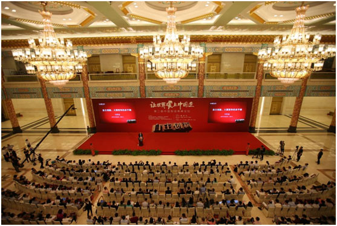

>新闻中心>公司新闻
>新闻中心>公司新闻
7月23日，由科技部指导，中国机械工业联合会、中国质量协会、科技日报社、新华社瞭望智库、新华社《财经国家周刊》、人民日报社《中国经济周刊》、珠海格力电器股份有限公司联合主办的“让世界爱上中国造？自主创新”第二届中国制造高峰论坛在北京人民大会堂隆重举行。
图为第二届中国制造高峰论坛现场
本届论坛以“自主创新”为主题，旨在探讨中国制造的未来之路，打造制造业版的“达沃斯论坛 ”。论坛引来了众 多中国企业界精英、知名专家学者、相关协会负责人、资深媒体人等齐聚一堂，共同探讨中国制造业的机遇与挑战，为 中国制造业谏言。值得一提的是，在本次论坛上，珠海格力电器股份有限公司董事长兼总裁董明珠首次正式宣布格力进 入多元化时代，并引起各界人士的广泛关注。
本次论坛由人民日报社副社长、中国报业协会理事长张建星，新华社副社长、党组成员刘思扬，科技部党组成员、《科技日报》社社长李平分别致欢迎辞。
在致辞中，人民日报社副社长、中国报业协会理事长张建星指出：发展中国制造，质量、品牌是生力军。他认为近年来中国制造的产品质量和水平不断攀升，但产品依然普遍存在档次不高，品牌不强，高精尖产品不强等情况，“中国制造业要再上一层楼，必须强化质量导向和品牌意识，以质取胜，并将打造百年品牌作为引领发展的长远战略，推动实现中国产品向中国品牌转变”。新华社副社长、党组成员刘思扬也表示：“只有不断提高有效供给的能力与质量，更好地满足逐步升级、日益旺盛的消费需求，才能在未来全球产业发展的竞争中占据制高点、掌握主动权。”科技部党组成员、科技日报社社长李平则认为，面对新形势、新要求，装备制造业必须在“坚持走自主创新之路”和“发扬工匠精神”两个方面有所提升和突破。